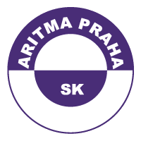
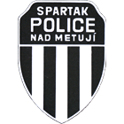
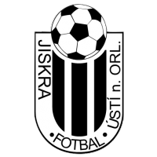
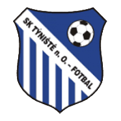
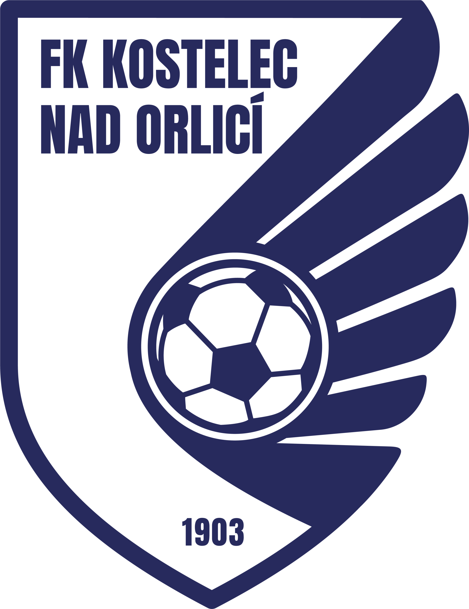
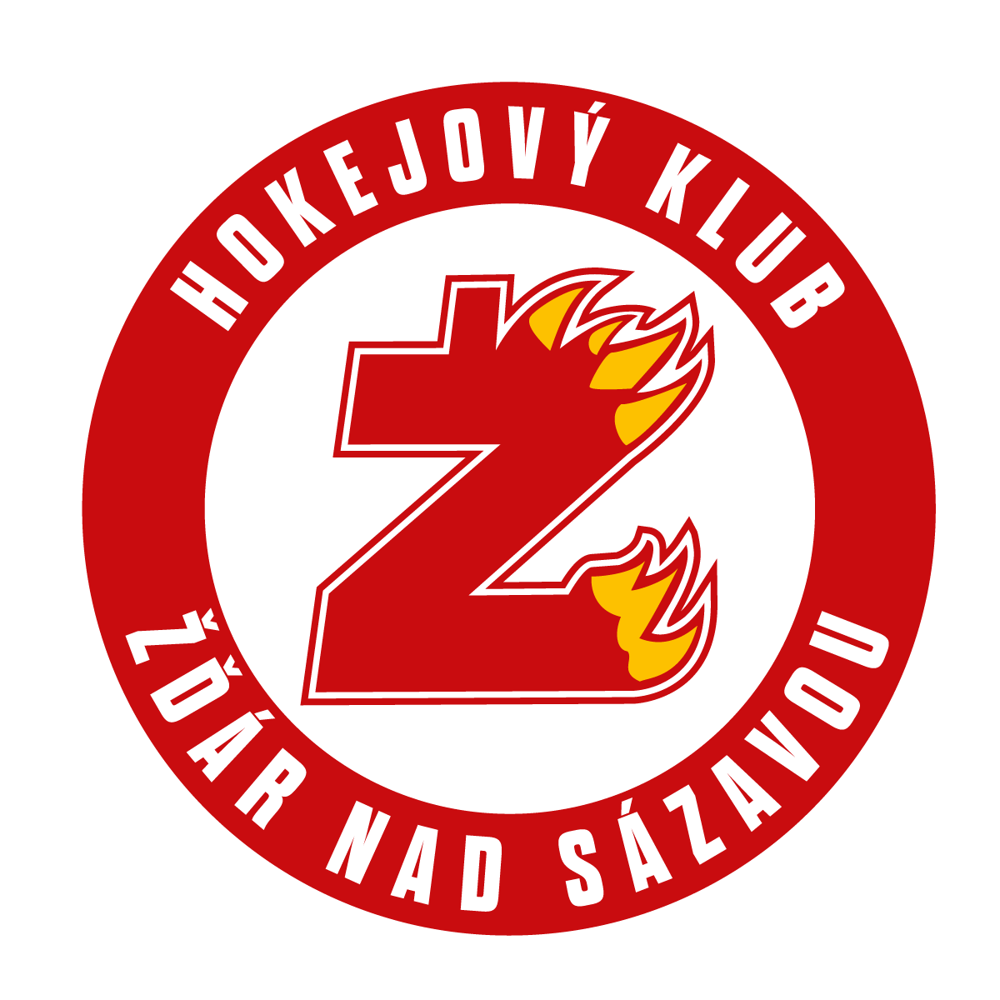

Štěpán Dostál
Věk: 23 let

SK Aritma Praha Hráčská kariéra
- 2009–2016TJ Baník Vamberk
- 2016–2017FK Náchod
- 2017–2018FC Spartak Rychnov n. K.
- 2018–2023FK Pardubice
- 2023–současnostSK Aritma Praha
Michael Ptáček
Věk: 26 let

Spartak Police nad Metují Hráčská kariéra
- 2006–2014TJ Baník Vamberk
- 2014–2020FC Hradec Králové
- 2020–2022TJ Jiskra Ústí nad Orlicí
- 2022–2026SK Solnice
- 2026–současnostSpartak Police nad Metují
Radek Tichý
Věk: 34 let

TJ Jiskra Ústí nad Orlicí Hráčská kariéra
- 2000–2004TJ Baník Vamberk
- 2004–2006FC Spartak Rychnov n. K.
- 2006–2007FK Náchod
- 2007–2012FC Hradec Králové
- 2012–2013FK Letohrad
- 2013SK Roudnice nad Labem
- 2014–2018FK Letohrad
- 2018–současnostTJ Jiskra Ústí nad Orlicí
Ondřej Tobiška
Věk: 21 let

SK Týniště nad Orlicí Hráčská kariéra
- 2011–2016TJ Baník Vamberk
- 2017–2018SK Vysoké Mýto
- 2018–2021FC Hradec Králové
- 2021–2022TJ Baník Vamberk
- 2022FK Náchod
- 2022–2026SK Solnice
- 2026–současnostSK Týniště nad Orlicí
Robin Ptáček
Věk: 26 let

FK ROJEK Kostelec n.O. Hráčská kariéra
- 2006–2020TJ Baník Vamberk
- 2020–2026SK Solnice
- 2026–současnostFK ROJEK Kostelec n.O.
Radek Müller
Věk: 26 let
FK ROJEK Kostelec n.O.
Hráčská kariéra
- 2006–2022TJ Baník Vamberk
- 2022–současnostFK ROJEK Kostelec n.O.
Ondřej Kotyza
Věk: 28 let
FK ROJEK Kostelec n.O.
Hráčská kariéra
- 2009–2020TJ Baník Vamberk
- 2020–současnostFK ROJEK Kostelec n.O.
David Brožek
Věk: 22 let

SKLH Žďár nad Sázavou Hráčská fotbalová kariéra
- 2013–2017TJ Baník Vamberk
Hráčská hokejová kariéra
- 2018–2020Mountfield HK
- 2021–2022South Muskoka Shield
- 2022–2023Mountfield HK
- 2023-2026Salzgitter Icefighters
- 2026–současnostSKLH Žďár nad Sázavou